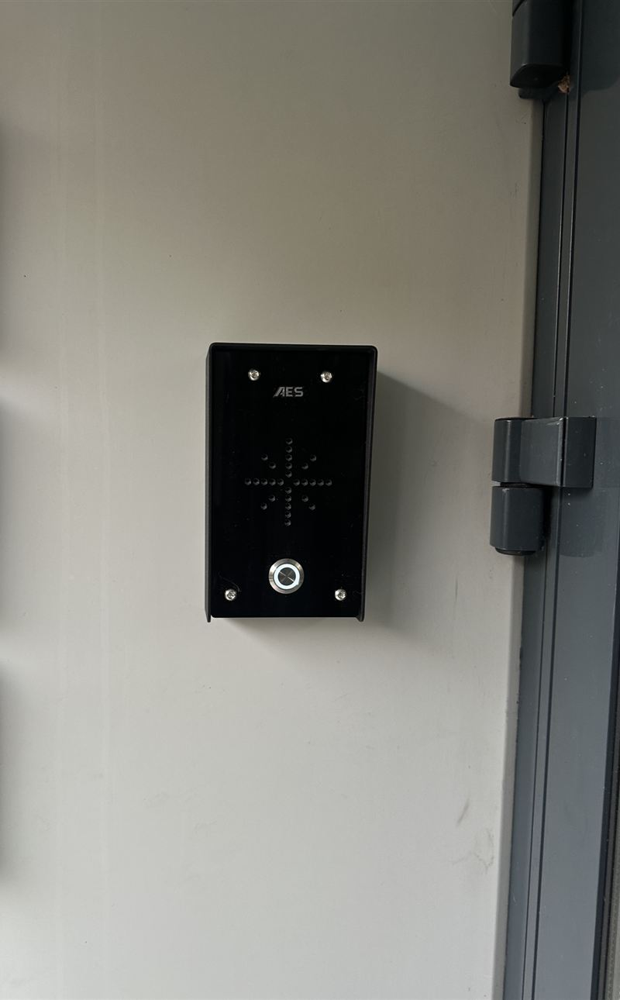

Un visiteur sonne, et c'est votre téléphone portable qui reçoit l'appel, que vous soyez au bureau, en rendez-vous ou chez vous. Vous lui parlez, puis vous ouvrez la porte d'une touche. C'est le principe de l'interphone GSM, ou interphone à carte SIM. Voici comment il fonctionne, ce qu'il faut prévoir pour l'installer, ses limites et ce qu'il coûte.
En bref
- Pas d'internet, pas de câble jusqu'au logement : l'interphone appelle votre portable par le réseau mobile, avec sa propre carte SIM.
- Il faut une alimentation électrique près de la porte, un bon réseau mobile à cet endroit et un petit forfait pour la carte SIM.
- Pour ouvrir à distance, la porte doit avoir une gâche, une ventouse ou un portail motorisé.
Comment fonctionne un interphone GSM ?
La platine posée à l'entrée contient une carte SIM, comme un téléphone. Quand un visiteur appuie sur le bouton d'appel, elle compose le numéro que vous avez enregistré. Si vous ne répondez pas, elle peut appeler un deuxième numéro, puis un troisième, selon le modèle.
Vous parlez au visiteur comme lors d'un appel normal. Pour lui ouvrir, vous appuyez sur une touche de votre téléphone : l'interphone actionne alors la commande d'ouverture de la porte. Sur beaucoup de modèles, vous pouvez aussi ouvrir en appelant l'interphone depuis un numéro autorisé, ce qui sert par exemple pour un portail de parking.
Pour qui est-ce le bon choix ?
- Un commerce, un bureau ou un local d'activité : l'appel suit le responsable, même quand il n'est pas sur place.
- Une maison avec un portail loin de l'habitation : pas de tranchée ni de câble à tirer jusqu'à la maison.
- Un local qui a déjà un interphone collectif, quand vous voulez un appel qui arrive directement sur votre téléphone, sans passer par le combiné de l'immeuble.
Ce qu'il faut prévoir avant la pose
- Le réseau mobile à l'entrée : on vérifie le signal à l'endroit exact de la platine. Dans un hall en sous-sol ou derrière une grille métallique épaisse, il peut être trop faible.
- Un modèle 4G : les opérateurs arrêtent progressivement les anciens réseaux 2G et 3G. Un interphone qui ne fonctionne qu'en 2G risque de ne plus appeler du tout dans quelques années.
- L'alimentation : une arrivée 230 V ou un transformateur à proximité, raccordés selon la norme NF C 15-100.
- La commande d'ouverture : si la porte n'a ni gâche électrique ni ventouse, il faut en ajouter une pour pouvoir ouvrir à distance.
- Une carte SIM avec forfait, dont vous connaissez le code PIN, pour la programmation.
Les limites à connaître
- Sans courant, il ne fonctionne plus, sauf modèle avec batterie de secours.
- La plupart des modèles sont audio seulement : vous entendez le visiteur, sans le voir.
- Si votre téléphone est éteint ou sans réseau, l'appel n'aboutit pas. D'où l'intérêt d'enregistrer un deuxième numéro.
- Le forfait de la carte SIM est un petit coût mensuel à prévoir.
Un chantier réel : interphone GSM à Saint-Brice-sous-Forêt

À Saint-Brice-sous-Forêt (95), l'entrée commune de plusieurs commerces avait déjà un interphone d'immeuble. Une cliente voulait un interphone à elle, qui sonne sur son téléphone et lui permette d'ouvrir à distance. Elle avait acheté l'appareil, un interphone GSM AES. Nous l'avons posé à côté de l'interphone existant, raccordé à l'alimentation et à la commande d'ouverture, puis programmé (numéros d'appel, ouverture) et testé jusqu'à la mise en service. Voir le chantier.
Combien coûte un interphone GSM posé ?
- Pose, programmation et mise en service : à partir de 290 € TTC, quand vous fournissez l'appareil et que l'alimentation et la gâche sont déjà en place.
- L'appareil : fourni par vous ou par nous, sur devis selon le modèle (audio, vidéo, 4G).
- En plus si besoin : gâche électrique, tirage de câble, alimentation à créer. Tout est chiffré sur le devis avant de commencer.
- Déplacement : 65 € à 90 € TTC selon le département.
Pour un interphone classique, audio avec combiné intérieur, notre forfait est de 650 € TTC pose comprise : voir notre page installation et dépannage d'interphone.
Questions fréquentes
Faut-il internet pour un interphone GSM ?
Non. Un interphone GSM appelle votre téléphone par le réseau mobile, grâce à sa propre carte SIM. Il n'a besoin ni de box, ni de Wi-Fi, ni de câble réseau.
Faut-il un abonnement pour un interphone GSM ?
Oui : la carte SIM de l'interphone doit avoir un forfait qui permet d'appeler. Un petit forfait mobile suffit en général, car l'interphone ne passe que des appels courts.
Peut-on ouvrir la porte à distance avec un interphone GSM ?
Oui, si la porte ou le portail a une commande électrique (gâche, ventouse ou motorisation). Pendant l'appel, vous appuyez sur une touche de votre téléphone et l'interphone déclenche l'ouverture.
Un interphone GSM marche-t-il pendant une coupure de courant ?
Non, sauf s'il a une batterie de secours. Il est alimenté en 230 V ou par un petit transformateur : sans courant, il ne peut plus appeler.
Peut-on installer un interphone GSM dans un immeuble ?
Oui, pour un commerce, un bureau ou un logement. Si la platine se pose sur la façade ou dans les parties communes, il faut l'accord du syndic ou de la copropriété.